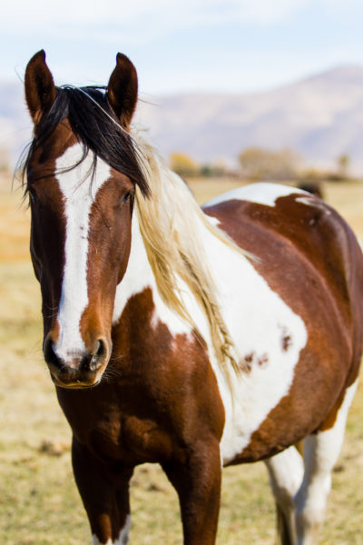
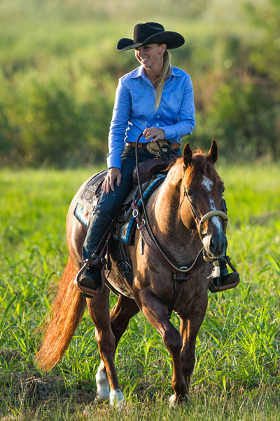

CALUL
Calul este considerat animalul nobililor.
Este folosit de când lumea pentru transport, divertisment şi sport.
De asemenea, este unul dintre cele mai prezente animale
în diverse mitologii şi religii.
Curiozitati despre cai:
- Caii pot să doarmă în picioare şi experimentează mişcări rapide ale ochilor în timpul somnului, ceea ce înseamnă că cel mai probabil visează.
- Hinduşii asociază caii cu cosmosul, iar caii albi sunt consideraţi reîncarcarea lui Vishnu.
- Strămoşul calului este Eohippus, care a trăit în urmă cu 55 de milioane de ani.
- Caii beau foarte multă apă. Într-o zi singură zi, aceştia ajung să bea peste 90 de litri de apă. Apa reprezintă 50% din greutatea totală a cailor.
- Hipopotam înseamnă: „cal de apă”, asta deşi hipopotamii sunt „înrudiţi” mai degrabă cu porcii decât cu caii.
- În lume se estimează că sunt în jur de 58 de milioane de cai.
- Cei mai rezistenţi cai şi buni alergători sunt consideraţi caii arabi. Aceştia pot să alerge fără oprire 160 de kilometri. Până şi structura scheletică a cailor arabi diferă de a celorlalţi.
- În unele ţări, carnea de cal este considerată o delicatesă. În Franţa, de exemplu, în meniurile unor restaurante găsim carne, creier şi inclusiv inimă de cal, pregătite în diverse feluri.
- Caii au fost domesticiţi în urmă cu 5.500 de ani. Omul a domesticit câinii în urmă cu 14.000 de ani în urmă, iar pisicile în urmă cu 8.500 de ani.
- Cel mai bătrân cal a murit în 1822. Acesta avea 62 de ani, în condiţiile în care caii trăiesc în medie 25 de ani.
- Există doar o singură specie de cai care nu a putut fi niciodată domesticită. Este vorba despre Przewalski, din Mongolia.
- În timpul celui de-al Doilea Război Mondial, germanii şi sovieticii au folosit peste 6 milioane de cai. Milioane de cai şi măgari au murit în timpul războiului.
Citeste mai mult: www.adevarul.ro
|

|
|

|
Curse de cai
Cursele de cai sunt unele din cele mai vechi întreceri sportive care se desfășoară pe hipodrom. Pentru aceste curse sunt folosiți cai crescuți și selectați exclusiv în acest scop.
Rasele de cai utilizate mai frecvent sunt:
- "Calul pursânge englez"
- „Calul arab”
- „Trăpașul” o categorie de cai care cuprinde mai multe rase: trăpașul american, trăpașul francez, trăpașul Orlov ș. a.
Caii care participă la curse sunt supuși unui examen riguros pentru a se stabili dacă sunt sănătoși, rezistenți și de rasă nobilă, verificându-se în același timp alura, ușurința, iuțeala și mobilitatea în alergare.
Acest sport a fost practicat din vechime, fiind o ocupație importantă în timpul liber a unor grupuri sociale bogate. În afară de cursele de întreceri se mai organizează și vânători cu hăituirea vânatului călare, acțiune care în ultimul timp este tot mai criticată de iubitorii de animale.
Cursele pot să fie cu obstacole, pe diferite distanțe și pe categorii de cai.
În general se evidențiază două categorii de curse:
- Cursele de galop, când călărețul șede în șa pe spatele calului (Calul pursânge englez),
- Cursele de trap, când driverul se află într-un atelaj ușor numit sulky (Rasele de trăpași).
Cursă de trap pe hipodromul Saint-Jean-des-Prés în departamentul Morbihan, Franța
La curse se pot face și pariuri cu diferite criterii, care pot atinge sume considerabile.
|